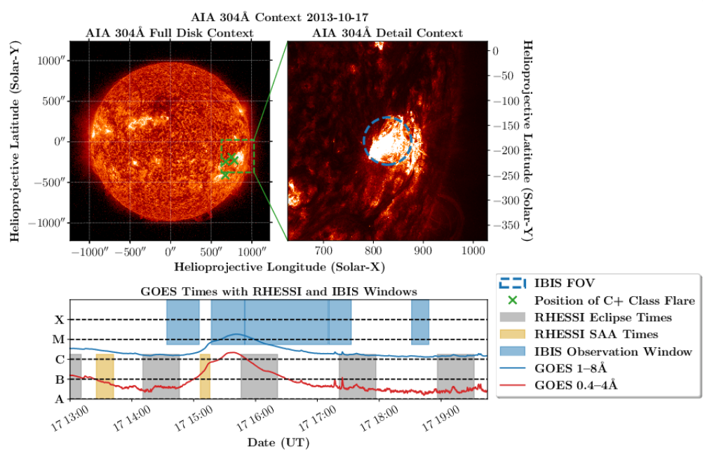
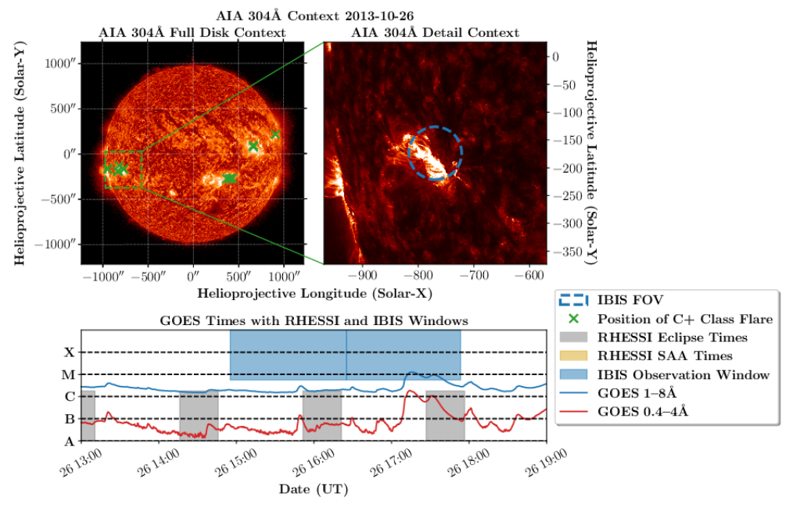
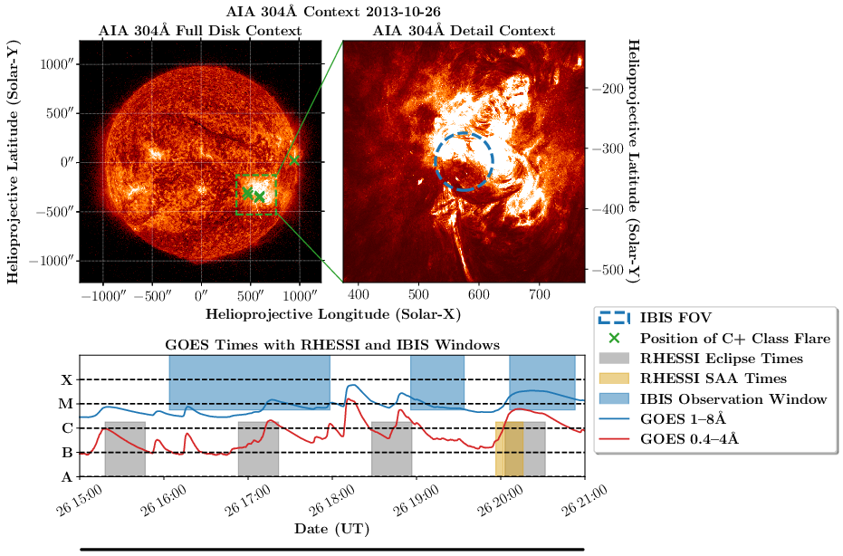
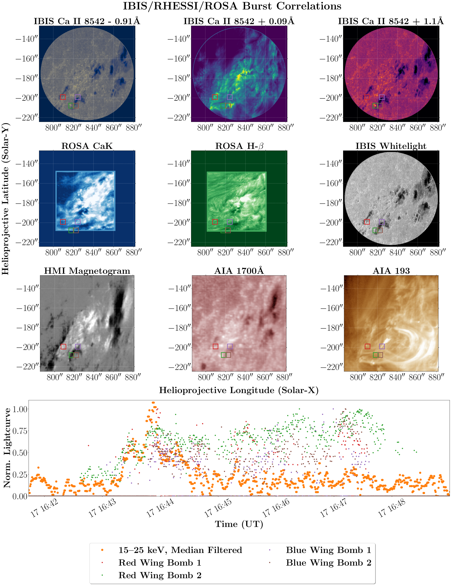
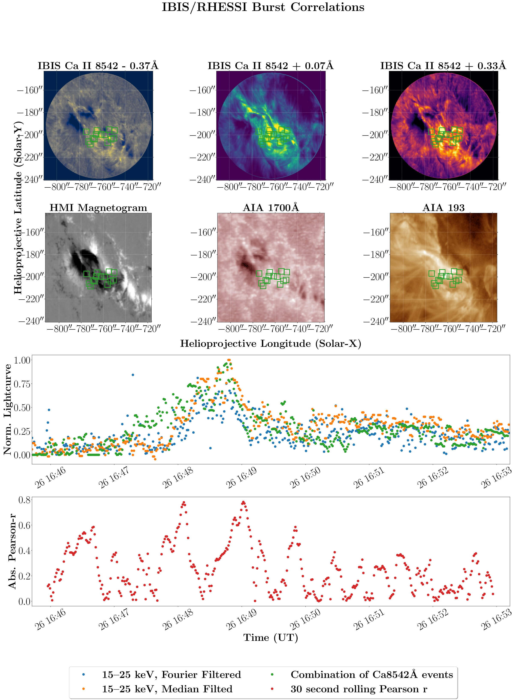
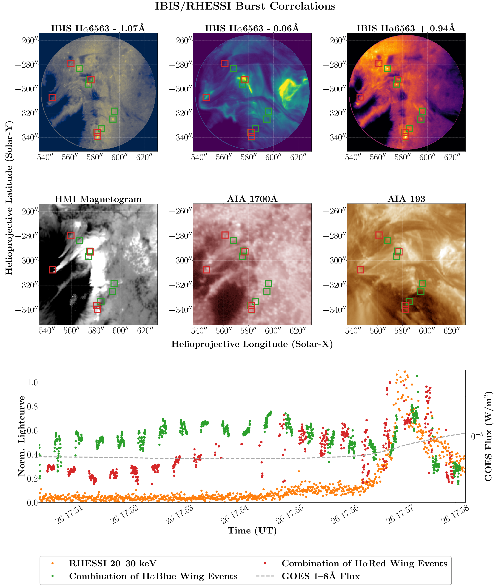
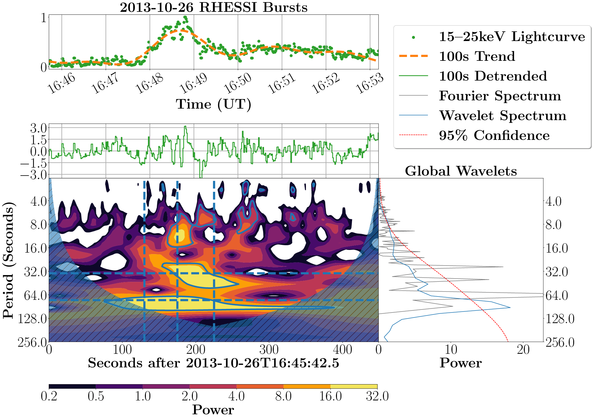
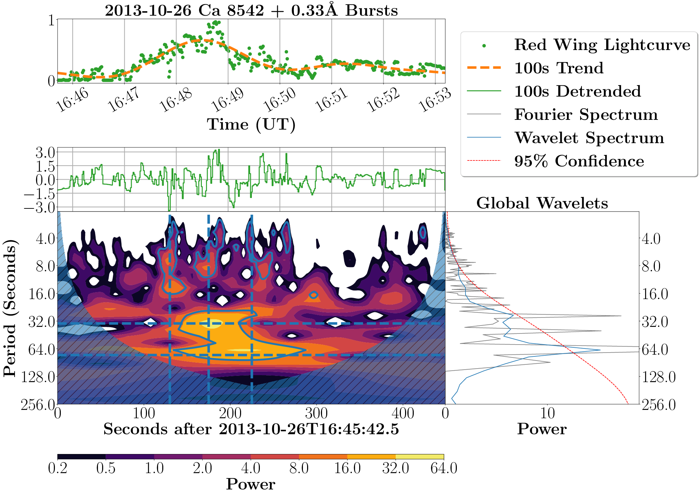

Small-Scale Low-Chromospheric Brightenings
and their Hard X-ray Origins
A preliminary study of flare-associated chromospheric sources as the origin of HXR emission using the Dunn Solar Telescope (DST).
Motivation
The chromospheric Hα 6563Å line is known to be particularly sensitive to nonthermal processes (see papers Canfield et al. 1984; Canfield & Gayley 1987). Previous observations have shown that nonthermally driven quasi-periodic oscillations are present in the Hα line during flares (e.g., Wang et al. 2000, 2003; McAteer et al. 2005; Jackiewicz & Balasubramaniam 2013; Radziszewski et al. 2011). Particularly, the blue wing of Hα is sensitive to nonthermal energy processes without significant contamination from thermal processes or plasma motions. In a preliminary project by Sellers & McAteer, we attempt to study nonthermal features both in Hα, and in the Ca II 8542Å line, for which high-cadence observations are somewhat rarer.
The goal of this project is to link the timing and oscillatory signatures of flare-like HXR signatures with corresponding bursts in the lower solar atmosphere, in order to reveal the fundamental locations of HXR energy deposition. To this end, we have created an algorithm based on the work of Vissers et al. 2013 (see the link to my github, right) to extract and track flare sources in the wings of Hα 6563Å and Ca II 8542Å. This page presents some preliminary results from the upcoming paper. For a slightly more organized discussion, my thesis is available here.
Data
We use data from the IBIS Fabry-Perot spectro-imager from three days during the DST Service Modes during 2013--2014. 2013-10-17 has fast cadence (0.4 s) Ca II 8542Å data with a coarse spectral sampling (3 positions). 2013-10-26 has medium cadence (1.8 s) Ca II 8542Å data with a standard spectral sampling (11 position). 2014-10-26 has mixed cadence Hα 6563Å data with coarse spectral sampling (3 positions). The below images and videos show the data, and wider context on the solar disk and in relation to GOES-flux throughout the observing period.
2013-10-17
2013-10-26
2014-10-26
(Preliminary) Results
Listen. I don't want to give away all my secrets. But here's some. What we're looking for are sources with a flare-like behaviour (handled by the extraction algorithm), who have flux peaks that align in time with peaks of HXR intensity. We find this, but what we find beyond that is that:
- Individual sources tend to only correlate with short sections of the HXR lightcurve
- The HXR lightcurve can be recreated from a combination of sources, implying that nonthermal processes are episodic
- Oscillatory signatures from wavelet transformations match between HXR lightcurves and low-atmospheric burst lightcurves.
- For Ca II 8542Å, the red wing correlates with HXR bursts better than the blue wing
To demonstrate, these are HXR lightcurves from RHESSI, and the combination of low-atmospheric sources that mirror them.
  And, the event from the middle picture of the above three, with a Morlet wavelet applied. HXR lightcurve first:
And now the same event, wavelet analysis carried out on the extracted IBIS source lightcurves:
Obviously, there's quite a bit more that I cannot put online just yet. Stay tuned for this page to be updated when the eventual paper is submitted!